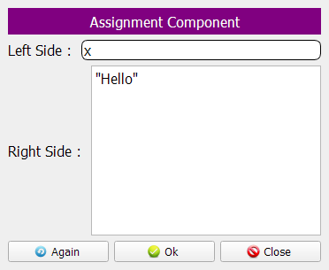
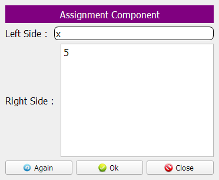
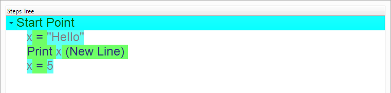
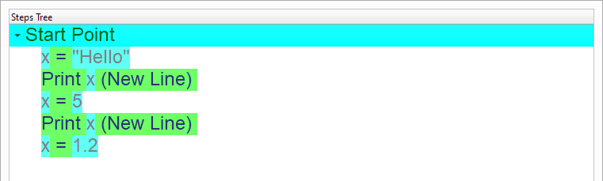
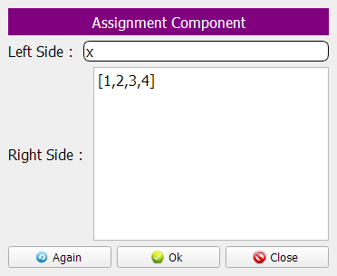
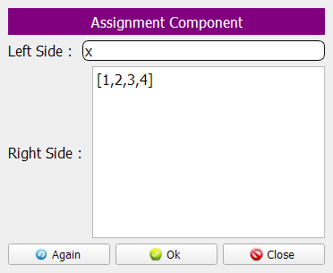
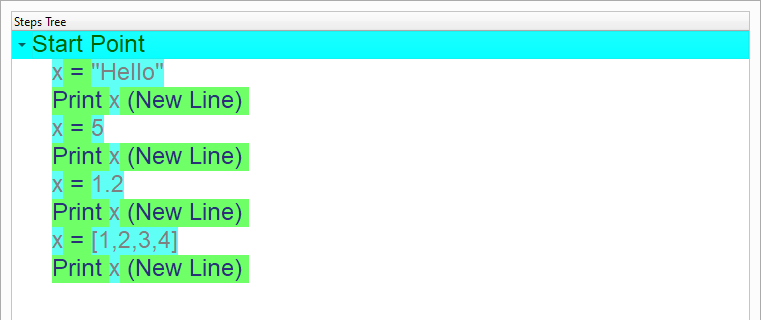
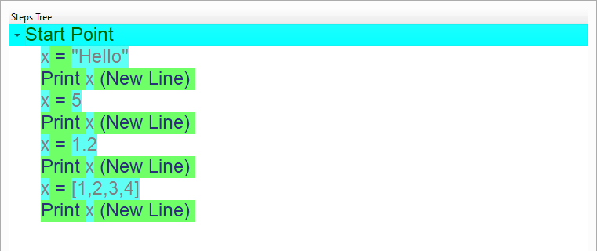
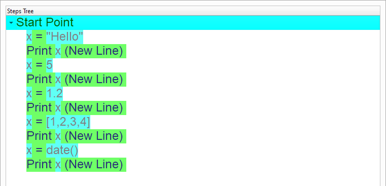
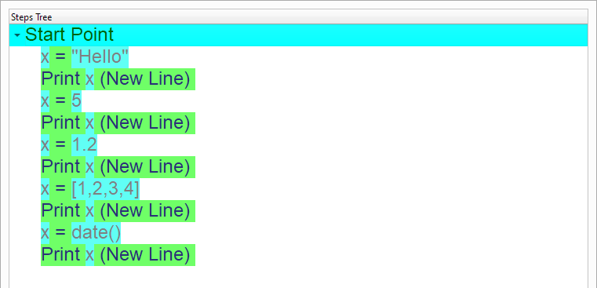

Using Variables
In this chapter we are going to learn how to use the Variables
To create a new variable, you just need to determine the variable name & value. The value will determine the variable type and you can change the value to switch between the types using the same variable name.
Generated Step:
<Variable Name> = <Value>
Tip
The operator ‘=’ is used here as an Assignment operator and the same operator can be used in conditions, but for testing equality of expressions.
Note
The Variable will contains the real value (not a reference). This means that once you change the variable value, the old value will be removed from memory (even if the variable contains a list or object).
The variable type is based on the value, and this value could be
String (One Character, Many Characters, Many Lines, Binary Data)
Number (Signed Integer, Unsigned Integer, Double, Boolean)
List (List of one type, List of many types, Nested Lists)
Object
Introduction
We will create a simple program to learn how to use the Variables
We can create this program quickly using the Quick Start component

Program Steps
After selecting the (Variables) template, we will get the next steps in the Goal Designer

Creating the Program
To create this program we will use the next components
Assignment
Print Text
At first we will define a variable called X
The Variable value will be “Hello” which is a String
In the begining the Steps Tree is empty
Select the (Assignment) component

Enter the data in the Interaction Page
Left Side: X
Right Side: “Hello”
A new step will be added to the Steps Tree

Let’s print the variable using the (Print Text) component

Enter the data in the Interaction Page
Text: X
Type: Expression

The Steps Tree is updated!
Now we will set X to 5
X type will be a Number (The type is based on the value)

Enter the data in the Interaction Page
Left Side: X
Right Side: 5
The Steps Tree is updated!
Let’s print the variable using the (Print Text) component
Set X to 1.2
We will print the X value


X will be a List of four items [1,2,3,4]
 

Print the X value

 

X will be a String that contains the Date


Print X value (The Date)

 

X will be a String contains the Time


Print X value (The Time)


X will be True (Number: 1)


Print X value (Will print 1)


X will be False (Number: 0)


Print X value (Will print 0)


Now we have the final Steps Tree in our program